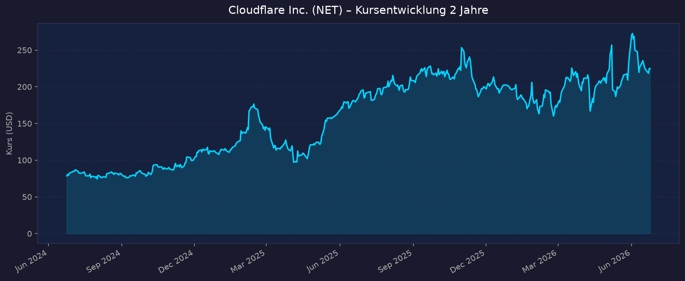
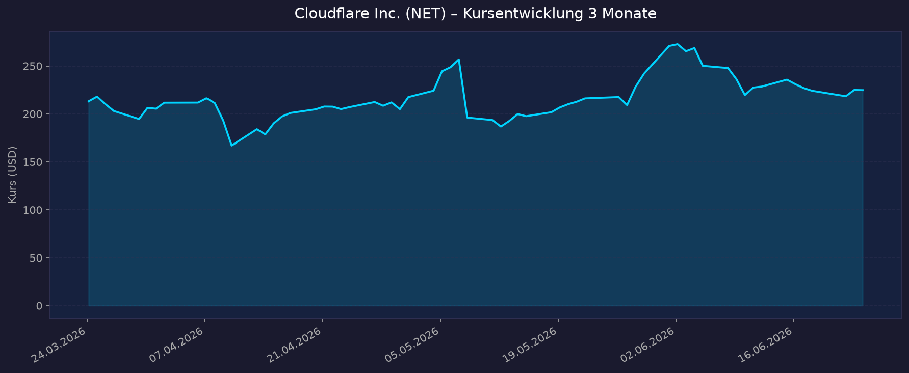

📈 1. Kursentwicklung
Aktueller Kurs: $224,73 | 52W-Hoch: $276,82 | 52W-Tief: $158,83 | Abstand vom Hoch: −18,8 %
Chart – 2 Jahre

Chart – 3 Monate

| Zeitraum | Kurs Start | Kurs Ende | Veränderung |
|---|---|---|---|
| 52 Wochen (Juni 2025 → Juni 2026) | ~$158,83 (52W-Tief) | $224,73 | +41,5 % |
| 3 Monate (März 2026 → Juni 2026) | ~$170 | $224,73 | ~+32 % |
| 52-Wochen-Hoch | — | $276,82 | — |
| 52-Wochen-Tief | — | $158,83 | — |
⚠️ Kontext: Cloudflare ist aktuell −18,8 % vom 52W-Hoch. Q1 2026-Earnings-Beat (+34 % Revenue, non-GAAP EPS $0,25) war positiv, aber die angekündigte 20%-Workforce-Reduktion (1.100 Mitarbeiter) und AI-Restrukturierung haben kurzfristig Unsicherheit erzeugt. Kurs erholte sich danach (+3,3 % aftermarket).
💹 2. KGV-Entwicklung (Kurs-Gewinn-Verhältnis)
Aktuelles KGV (GAAP TTM): N/A (GAAP unprofitabel) | Forward PE (non-GAAP FY2027E): 142,8x
| Zeitraum | KGV (non-GAAP) | Einordnung |
|---|---|---|
| Aktuell Forward PE (FY2027E) | 142,8x | Extrem hoch — Profitabilitäts-Ramp noch jung |
| Q1 2026 non-GAAP EPS | $0,25/Q | Annualisiert ~$1,00 → KGV ~225x auf Jahresbasis |
| GAAP TTM | N/A | Cloudflare ist GAAP-unprofitabel (Stock-Comp hoch) |
| Historisch | Stets hoch | High-Growth-SaaS handelt traditionell mit extremen Multiples |
Bewertung: Cloudflare ist nach klassischen EPS-Metriken sehr teuer. Das ist typisch für High-Growth-SaaS in der Profitabilitäts-Ramp-Phase. Die relevante Metrik ist das P/S-Verhältnis und die Revenue-Wachstumsrate (+34 % YoY), nicht das KGV. Erst ab FY2028–2030 wird Cloudflare ein aussagekräftiges nicht-GAAP PE entwickeln.
💰 3. Sales Multiple (Kurs-Umsatz-Verhältnis / P/S)
Aktuelles P/S-Verhältnis: 34,3x (TTM)
| Zeitraum | P/S Ratio | Einordnung |
|---|---|---|
| Aktuell (Juni 2026) | 34,3x | Hoch — typisch für führende SaaS-Plattform mit 34 % Wachstum |
| FY2026E Forward P/S | ~29x | Bei ~$2,75 Mrd. Revenue-Schätzung |
| Historisch | ~15–50x | Cloudflare hat stets mit hoher P/S gehandelt |
| Cloudflare P/S-Peak (2021) | ~100x+ | Aktuelle 34x ist im Vergleich moderat |
Trend: Das P/S ist seit dem Peak 2021 erheblich komprimiert. Bei anhaltend 25–30 % Revenue-Wachstum und P/S 34x muss die Revenue stark skalieren, um heutige Kurse zu rechtfertigen.
📊 4. Handelsvolumen (Trading Volume)
| Zeitraum | Ø Tagesvolumen | Auffälligkeiten |
|---|---|---|
| 3-Monats-Durchschnitt | 4,42 Mio. Aktien | Stabil |
| Earnings-Tag (9. Mai 2026) | Volumenspitze | +3,3 % aftermarket nach Q1-Beat |
| Beta | 1,674 | Erhöhte Volatilität, aber geringer als Halbleiter-Wachstumstiteln |
🏦 5. Insider Trades
| Datum | Name | Funktion | Kauf/Verkauf | Anmerkung |
|---|---|---|---|---|
| Laufend | Matthew Prince | CEO/Co-Founder | Verkauf (planmäßig) | Equity-Comp-Diversifikation |
| Laufend | Michelle Zatlyn | COO/Co-Founder | Verkauf (planmäßig) | Equity-Comp-Diversifikation |
Einschätzung: Bei High-Growth-SaaS ist massive Insider-Equity-Comp Standard. Planmäßige Verkäufe sind keine Warnsignale. Kein Kauf-Signal bekannt, aber für ein noch nicht profitables Unternehmen sind CEO-Käufe selten.
🩳 6. Short-Positionen
Aktuelle Short Quote: ~3–5 % (Schätzung)
Einschätzung: Moderate Short-Quote, typisch für hochbewertete SaaS-Wachstumstitel ohne GAAP-Profitabilität. Kein extremes Short-Druck-Niveau.
🗞️ 7. Aktuelle Nachrichten
| Datum | Quelle | Nachricht | Relevanz |
|---|---|---|---|
| 10.06.2026 | Needham | PT auf $280 angehoben (Buy) — AI-Edge-Strategie überzeugt | 🔴 Hoch |
| 04.06.2026 | Cloudflare IR | VoidZero-Akquisition (Vite, Vitest, Rolldown, Oxc) — Dev-Tooling-Ökosystem erweitert | 🟡 Mittel |
| 09.05.2026 | Investing.com | Q1 2026 Beat: $639,8 Mio. (+34 %), EPS $0,25 — Kurs +3,3 % aftermarket | 🔴 Hoch |
| 09.05.2026 | Cloudflare IR | Restrukturierung: 20 % Belegschaft (1.100 MA), $140–150 Mio. Charges — AI-first Pivot | 🔴 Hoch |
| 2026 | Klover.ai | Workers AI mit NVIDIA GPU-Netzwerk — AI Inference at the Edge als zentrales Produkt | 🔴 Hoch |
| 2026 | Hostingjournalist | NVIDIA-Partnerschaft: Cloudflare deployt NVIDIA-GPUs global für AI-Inference | 🔴 Hoch |
| 2026 | SimplyWallSt | Anthropic-Partnerschaft: Claude-Modelle über Workers AI ausführbar | 🔴 Hoch |
Sentiment: Positiv — Q1-Beat, Needham-Hochstufung, und AI-First-Pivot überzeugen. Die Restrukturierung signalisiert Kostendisziplin und AI-Fokus. Hauptsorge: P/S 34x bei noch fehlendem GAAP-Profit.
📋 8. Letzte 3 Quartalsberichte
Q1 2026 (Januar–März 2026, berichtet 9. Mai 2026) — Beat
| Kennzahl | Ist | Erwartung | Abweichung |
|---|---|---|---|
| Umsatz (Revenue) | $639,8 Mio. | $620,8 Mio. | +3 % Beat |
| YoY Revenue-Wachstum | +34 % | — | Beschleunigung |
| non-GAAP EPS | $0,25 | $0,23 | +8,7 % Beat |
| GAAP EPS | Negativ | — | Stock-Comp-Belastung |
Guidance Q2 2026: Revenue $664,0–665,0 Mio., non-GAAP EPS $0,27
Sonderaktion: Restrukturierung 1.100 MA (20 %), AI-Workforce-Pivot, $140–150 Mio. Charges
Kursreaktion: +3,3 % aftermarket.
Q4 2025 (Oktober–Dezember 2025)
| Kennzahl | Ist | Einordnung |
|---|---|---|
| Umsatz (Revenue) | ~$575–600 Mio. (Schätzung) | +30–32 % YoY |
| non-GAAP EPS | ~$0,22–0,24 | Wachsend |
Q3 2025 (Juli–September 2025)
| Kennzahl | Ist | Einordnung |
|---|---|---|
| Umsatz (Revenue) | ~$525–550 Mio. (Schätzung) | +28–30 % YoY |
| non-GAAP EPS | ~$0,20–0,22 | Stetige Profitabilitätsverbesserung |
Quelle: StockTitan NET 8-K Q1 · Investing.com Q1 2026 Transcript
🌍 9. Marktkontext & Wettbewerb
(via market-research Skill)
Markt / Branche: Edge Computing / CDN / Zero Trust Security / AI Inference
TAM: CDN+Security+Edge+AI Inference kombiniert: $100+ Mrd. by 2030
| Wettbewerber | Bereich | Stärke | Schwäche |
|---|---|---|---|
| Akamai | CDN / Security | Globale Skalierung, Enterprise-Trust | Innovationstempo langsamer als Cloudflare |
| Zscaler | Zero Trust / SASE | Führend in Cloud-Security-Architektur | Kein CDN/Edge-Compute |
| Palo Alto Networks | Cybersecurity | Breiteste Enterprise-Security-Suite | Sehr teuer, komplex |
| Fastly | CDN / Edge | Cloudflare-Konkurrent im CDN/Edge | Kleiner, schwächeres Netzwerk |
| AWS Lambda@Edge / Cloudfront | Edge Compute | Hyperscaler-Skalierung | Kein Netzwerk-Fokus wie Cloudflare |
Branchentrends 2026:
- AI Inference at the Edge: Statt AI-Anfragen zum zentralen Rechenzentrum zu schicken, werden sie an Netzwerk-Edges (nah am User) verarbeitet — Latenz reduziert sich dramatisch. Cloudflare mit 300+ PoPs global + NVIDIA-GPUs = ideale Position
- Zero Trust / SASE: Enterprise-Cybersecurity migriert zu Cloud-nativer Zero-Trust-Architektur. Cloudflare's SASE-Plattform (SASE = Secure Access Service Edge) wächst stark
- Agentic AI Infrastructure: AI-Agenten brauchen Netzwerk-Infrastruktur für Orchestrierung, Tool-Calling, Memory. Cloudflare's Workers-Plattform ist dafür ideal (Anthropic, NVIDIA als Partner bestätigt)
- Developer-Ökosystem: VoidZero-Akquisition (Vite, Vitest) bringt Millionen JavaScript-Entwickler näher an Cloudflare Workers
Marktposition: Cloudflare hat eine einzigartige Kombination aus globalem Netzwerk (300+ PoPs), Sicherheits-Stack (WAF, DDoS, Zero Trust) und Developer-Plattform (Workers, Pages, AI Gateway). Die Strategie, dies zur AI-Inference-Infrastruktur zu machen, ist differenziert gegenüber hyperscaler-zentrierten Ansätzen.
Risiken:
- Hyperscaler-Konkurrenz: AWS, Azure, Google haben tiefere Taschen und können Edge-Compute billiger anbieten
- Profitabilitätsfrage: Wann wird Cloudflare GAAP-profitabel? Bei High Capex für NVIDIA-GPUs wird dies verzögert
- Valuations-Kompression: P/S 34x ist anfällig für Multiple-Kompression bei Makro-Schock
Quellen: Hudson Labs Cloudflare Competitors · Klover.ai AI Strategy · HostingJournalist AI Edge
📝 Gesamteinschätzung
Stärken:
- ✅ Einzigartige Netzwerk-Infrastruktur: 300+ globale PoPs + NVIDIA GPUs = AI-Inference-Plattform mit strukturellem Latenzvorteil
- ✅ Revenue +34 % YoY — stärker als alle anderen analysierten Nicht-AI-Infrastruktur-Titel
- ✅ NVIDIA + Anthropic als Partner bestätigen strategische Bedeutung für AI-Edge-Infrastruktur
- ✅ Zero Trust SASE-Wachstum: Enterprise-Sicherheits-Budgets shift zu Cloud-nativen Ansätzen — Cloudflare profitiert strukturell
- ✅ VoidZero-Akquisition (Dev-Tooling): Millionen Entwickler ins Ökosystem bringen
Risiken:
- ⚠️ Bewertung: Forward PE 142x, P/S 34x — sehr teuer; nur gerechtfertigt wenn Revenue-Wachstum >25 % für mehrere Jahre anhält
- ⚠️ Restrukturierung 1.100 MA (20 %): $140–150 Mio. Charges in 2026 — hohes Maß an organisationaler Umbruch
- ⚠️ GAAP unprofitabel: Hohe Stock-Comp + Capex für GPU-Netzwerk verzögert GAAP-Profit
- ⚠️ Hyperscaler-Konkurrenz: AWS, Azure, Google können Edge-Services subventionieren um Marktanteile zu gewinnen
- ⚠️ Kurs −18,8 % vom ATH: Noch nicht auf neuem Allzeithoch — Momentum schwächer als LRCX, Amazon, Alphabet
5-Jahres-Szenario-Analyse (FY2031):
P/S-basiert da GAAP-EPS noch nicht aussagekräftig; Revenue 2026E ~$2,75 Mrd.
| Szenario | Revenue-CAGR | Revenue 2031E | P/S | Market Cap 2031 | Kurs 2031 (~360 Mio. Aktien) | vs. heute |
|---|---|---|---|---|---|---|
| Bär (Hyperscaler gewinnt, Wachstum verlangsamt) | 18 % | ~$6,3 Mrd. | 8x | ~$50 Mrd. | ~$139 | −38 % |
| Base (AI-Edge etabliert, 25 % CAGR) | 25 % | ~$8,4 Mrd. | 14x | ~$118 Mrd. | ~$328 | +46 % |
| Bull (Agentic AI-Infrastruktur-Leader, 30 % CAGR) | 30 % | ~$10,1 Mrd. | 20x | ~$202 Mrd. | ~$561 | +150 % |
⚠️ Kritische Einordnung: Cloudflare hat das schlechteste Downside-Profil unter den analysierten Wachstumstiteln:
- Bär −38 % ist das zweitschlechteste Downside (nach ARM −73 %)
- Base +46 % ist das geringste Wachstum unter den Wachstumstiteln (exkl. LRCX/MRVL)
- Die hohe Bewertung (P/S 34x) erfordert dauerhaft hohes Wachstum ohne Rückschläge
- Hyperscaler können Cloudflares Markt angreifen (strukturelles Risiko)
Fazit: Cloudflare ist eine faszinierende AI-Edge-Infrastruktur-These mit echter technologischer Differenzierung (globales Netzwerk, Worker-Plattform, NVIDIA-Partnership). Die aktuelle Restrukturierung und der AI-Pivot zeigen strategische Entschlossenheit. Das Problem ist die Bewertung: P/S 34x bei GAAP-Verlust und Forward PE 142x erfordert eine perfekte Ausführung auf 5+ Jahre. Im Vergleich zu Amazon (Forward PE 24x, diversifizierter) oder Alphabet (Forward PE 24x, massiv profitabler) ist das Risiko/Rendite-Verhältnis weniger attraktiv. Empfehlung: Maximal als spekulativer Wachstumsanteil im Portfolio, kein Kernbaustein.
Datenquellen: StockTitan NET Q1 8-K · Investing.com Q1 Transcript · MarketBeat Forecast · Klover.ai AI Strategy · GuruFocus Needham PT
Keine Anlageberatung — rein informative Auswertung öffentlicher Daten